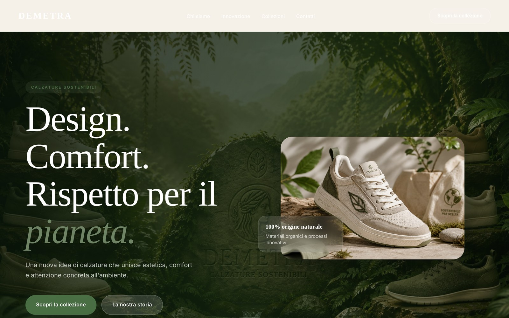

Demetra — Landing page per un brand di calzature sostenibili
- Obiettivo
- Costruire da zero una pagina di presentazione completa e responsive, curandone struttura semantica, gerarchia visiva e comportamento su ogni formato di schermo.
- Soluzione
- Layout in CSS Grid e Flexbox, tipografia fluida con
clamp(), design system basato su custom properties e menu mobile realizzato con la sola CSS tramite checkbox nascosta. - Risultato
- Sito pubblicato su GitHub Pages, accessibile da tastiera, con animazioni disattivate per chi ha impostato la riduzione del movimento. Asset grafici generati con strumenti AI.